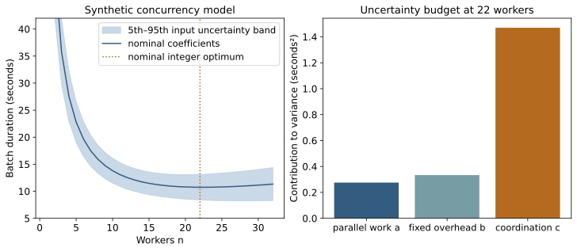
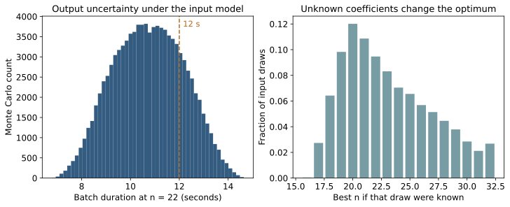

Browse chapters
18 Optimize under uncertainty
A better score is only useful when it answers the decision
Chapter 6 showed a scheduler choosing the wrong action for the completion-time objective even after a missing candidate was restored. Optimization could perfectly maximize that score and still produce the undesirable schedule. Before improving the optimizer, check the objective, the feasible actions, and the model connecting actions to outcomes.
This chapter builds a smaller problem you can solve by hand, enumerate in code, and analyze under uncertainty. The project is choosing how many workers to run for a fixed batch. We use a deliberately synthetic timing model:
T(n) = a/n + b + c(n - 1)T is duration in seconds. The worker count n is a positive integer. The term a/n represents perfectly divisible work, b represents fixed overhead, and c(n − 1) represents an increasing coordination penalty. For the nominal example, a = 100, b = 2, and c = 0.2. These coefficients were invented for instruction. They were not fitted to the scheduler, an agent system, or measured hardware.
At one worker, T is 102 seconds. At ten, it is 13.8 seconds. Extra workers reduce the divisible work but increase coordination. The model makes that tradeoff visible. It omits memory contention, discrete tasks, network saturation, startup delays, and many other effects a deployed system might require.
Define the feasible problem
An optimization problem contains decision variables, an objective, and constraints. Here the decision is n, the objective is to minimize T(n), and the basic constraints are integer n between 1 and 32. A memory budget might restrict n to at most 12. A cost budget or a failure-rate limit would create a different feasible set.
If the goal is cost, measure cost. If the goal is a latency deadline, minimizing mean duration may be insufficient. A weighted sum of dollars, seconds, and failure probability requires conversion weights that express a real tradeoff. A hard permission or safety requirement generally belongs in a constraint or gate, not in a penalty small enough to be offset by speed.
Write a baseline and a stopping condition before tuning. A baseline could be the current worker count or a simple enumeration of all feasible counts. A stopping condition could be finding a configuration that meets the deadline with a stated uncertainty margin at acceptable cost. “The optimizer converged” describes a numerical event, not the user's outcome.
A derivative tells you which direction helps locally
Treat n temporarily as a continuous positive number. The derivative of T with respect to n is −a/n² + c. It describes the local change in seconds for a small change in worker count. Setting this derivative to zero gives n = square root of (a/c).
For the nominal coefficients, this is square root of 500, approximately 22.36068. The second derivative is 2a/n³, which is positive when a and n are positive. The curve bends upward everywhere in the positive domain, so this stationary point is the continuous global minimum. The fixed term b changes the height of the curve without changing the optimum.
Workers are integers. Evaluate the neighboring feasible values rather than rounding without checking. T(22) = 10.7454545 seconds and T(23) = 10.7478261 seconds. Enumeration over 1 through 32 confirms that 22 is best for the nominal model. The difference between 22 and 23 is only about 0.00237 seconds. Such a small model difference would require correspondingly strong evidence before it justified a real operational choice.
With the additional constraint n at most 12, the optimum is 12 and the modeled duration is 12.53333 seconds. A solution that ignores the constraint is not a candidate you can deploy.
import numpy as np
workers = np.arange(1, 33)
seconds = 100 / workers + 2 + 0.2 * (workers - 1)
best = workers[np.argmin(seconds)]
feasible = workers <= 12
budget_best = workers[feasible][np.argmin(seconds[feasible])]For a larger differentiable problem, the gradient contains one partial derivative per variable. Moving against it can reduce an objective locally, but the step size, constraints, scaling, and curvature matter. Convexity gives useful guarantees under the appropriate conditions; general nonlinear problems can contain several local minima. Solver choice follows the problem's structure. Boyd and Vandenberghe on convex optimization, SciPy optimization guide
Check numerical behavior against a simple answer
A finite difference estimates a derivative by changing an input slightly. The centered estimate is [f(x+h) − f(x−h)] / (2h). A large h averages over curvature. A very small h can amplify floating-point cancellation or simulation noise. Try several scales and compare with an analytic derivative when one is available.
An optimizer's tolerance should relate to useful precision. Requesting many decimal places does not make uncertain measurements more accurate. Check the objective value, constraint residuals, termination status, and sensitivity to starting points. For small discrete problems, exhaustive enumeration gives a transparent reference against which to test a more elaborate search.
Poorly scaled parameters can also cause trouble. If one coordinate is measured in millions and another in thousandths, a common numerical step can be inappropriate. Scale variables deliberately and translate the answer back to physical units. Do not mistake a parameter rescaling for a new physical model.
When the objective is noisy, repeated evaluations at the same decision may disagree. Stochastic gradient methods estimate gradients from samples, often using data batches. Their randomness can be useful computationally, but it does not eliminate the need for held-out evaluation or a defensible stopping rule. A noisy score that rises after many trials may reflect selection of favorable noise.
Sensitivity is a question about what could change the answer
At a fixed worker count, the duration's sensitivities to the three coefficients are simple: the derivative with respect to a is 1/n, with respect to b is 1, and with respect to c is n − 1. At n = 22, these are approximately 0.04545, 1, and 21.
The largest derivative does not automatically identify the most important uncertainty source. The coefficients have different scales and uncertainty. Multiply each sensitivity by a plausible input standard uncertainty before comparing its effect on duration. A parameter with a large derivative but known very precisely may contribute little uncertainty.
A local sensitivity asks about a small change near specified values. A global sensitivity study explores a defined input range or distribution and can reveal interactions, thresholds, or changing parameter importance. Varying one input at a time is easy to interpret but can miss combinations where two inputs change together. Keep the range and dependence assumptions visible.
For this teaching problem, suppose a is uniformly distributed between 80 and 120, b between 1 and 3, and c between 0.1 and 0.3, independently. These are explicit assumptions about unknown coefficients, not estimated real-world distributions. A uniform interval of width w has variance w²/12, so the three variances are 133.33333, 0.33333, and 0.00333333.
Propagate uncertainty with the model
For a scalar output y = f(x), collect the local sensitivity coefficients into a vector g and the input covariance into a matrix S. A first-order approximation to output variance is:
variance(y) ≈ g^T S gIf inputs are independent, off-diagonal covariances are zero and this becomes a sum of squared sensitivities times input variances. With dependent inputs, the covariance terms can increase or decrease uncertainty. The approximation follows a local linearization; strong curvature, discontinuities, or wide input ranges can make it inadequate. NIST law of propagation of uncertainty
In our model, duration at a fixed n is exactly linear in a, b, and c. Consequently its variance formula is exact under the stated finite-variance input assumptions:
Var[T(n)] = Var(a)/n² + Var(b) + (n - 1)² Var(c)At 22 workers, the three contributions are approximately 0.27548, 0.33333, and 1.47000 seconds². They sum to about 2.07882, whose square root is 1.44181 seconds. The coordination coefficient contributes about 71 percent of this modeled variance. Measuring coordination more accurately could therefore be more useful than further refining the divisible-work coefficient, if these uncertainty assumptions were supported by real evidence.
This is an uncertainty budget: a record of inputs, their uncertainties, their influence, and their contribution to the result. It gives a measurement plan rather than merely a wider error bar. NIST uncertainty budgets

Figure 15. Left: the synthetic timing model with the fifth through ninety-fifth percentiles induced by the assumed input distributions. The vertical range emphasizes the useful worker-count region; the one-worker nominal value is 102 seconds, above the panel. Right: the analytic variance contributions at 22 workers. The shaded band describes input uncertainty under this model, not a confidence band fitted from scheduler data.
Monte Carlo sends uncertainty through the whole calculation
Monte Carlo propagation samples plausible inputs, evaluates the model for each draw, and summarizes the resulting outputs. It is especially useful when a nonlinear transformation makes a simple approximation inaccurate. Its interpretation depends on the distributions and dependence structure supplied to it. The method propagates assumptions; it does not validate them. JCGM guidance on Monte Carlo propagation
The companion draws 100,000 independent triples using a fixed random seed. It reuses each triple across all 32 worker counts. This makes each comparison refer to the same hypothetical workload coefficients, an example of common random numbers.
rng = np.random.default_rng(1801)
N = 100_000
a = rng.uniform(80, 120, N)
b = rng.uniform(1, 3, N)
c = rng.uniform(0.1, 0.3, N)
t22 = a / 22 + b + 21 * cThe simulated mean duration is 10.74927 seconds and its sample standard deviation is 1.44266 seconds. The analytic mean is 10.74545 and the analytic standard deviation is 1.44181. Their agreement is a useful code and arithmetic check. It does not test whether the input distributions describe a real system.
The simulated chance that duration exceeds 12 seconds is 0.21400. With independent Monte Carlo draws, its simulation standard error is approximately square root of [p(1−p)/N], here 0.00130. This is uncertainty from finite numerical sampling conditional on the chosen input model. It is distinct from uncertainty about the input distributions, model structure, or deployed workload.
More draws reduce Monte Carlo noise. They do not resolve missing measurements, confounding, a wrong coordination model, or an omitted failure mode. A million draws from a poorly chosen model can produce a stable and misleading answer.

Figure 16. Left: modeled duration at a fixed 22 workers. Right: which worker count would be best if each sampled coefficient triple were known in advance. The right panel describes sensitivity of the optimum; it is not the performance of a deployable policy that can observe unknown coefficients for free.
Nonlinear transformations change the answer
Suppose each batch contains 600 items. Its rate is 600/T items per second. The average of those per-batch rates is not the rate obtained by dividing all processed items by total elapsed batch time.
In the simulation, the mean of 600/T at 22 workers is about 56.86854 items per second. Dividing 600 by the mean duration gives about 55.81774. For sequential equal-sized batches with negligible gaps, total items divided by total time corresponds to the second calculation. For a question about the distribution of individual batch rates, the first may be relevant. Write the denominator before naming either number throughput.
A first-order approximation to the rate's standard deviation is [600 / mean(T)²] times the duration standard deviation. Using the nominal mean gives about 7.49220 items per second, whereas direct Monte Carlo gives about 7.93353. The transformation's curvature matters at this uncertainty scale. Inspect the full distribution when decisions depend on tails or thresholds.
The same issue appears in finance when averaging compounded returns, in image measurement when squaring a scale factor, and in GIS when transforming coordinates before computing area. Transforming an average generally differs from averaging transformed observations.
Choose a decision rule under uncertainty
Several legitimate objectives give different worker choices. Minimizing nominal duration chooses 22. In this simulation, minimizing the estimated ninety-fifth percentile over the 32 counts chooses 20. Minimizing the worst duration over the assumed coefficient intervals also chooses 20: the worst-case curve is 120/n + 3 + 0.3(n − 1), whose continuous minimum is exactly 20.
These are answers to different questions. A worst-case rule protects against all combinations inside the specified box, including combinations that may be extremely unlikely or impossible if inputs are dependent. A percentile rule depends on the input distribution and tail estimation. A mean rule can tolerate rare slow outcomes. Pick the rule from the consequence of failure, then test it on independent evidence.
The difference in nominal duration between 20 and 22 workers is only about 0.05455 seconds in this model. That may be negligible relative to uncertainty or cost. A broad region of acceptable choices can be more useful than one apparently exact optimum. Record the range of decisions meeting your requirements and identify which missing measurement could change the choice.
For stochastic engineering simulations, pair candidate policies on the same generated workload when possible. Compare differences within independent replications; do not treat events within one run as independent runs. A fixed seed helps reproduce a calculation. It does not supply an uncertainty estimate by itself. If policies consume randomness differently, arrange random inputs by stable event or workload identifiers so the pairing means what you intend.
Close the loop with observations
Before applying this model to a real system, measure durations across several worker counts and workload families, inspect residuals, and hold back fresh runs. Test whether the assumed coordination term is adequate and whether the feasible region includes memory, reliability, and cost limits. Use the model to identify informative experiments, not to replace them.
Exercise: suppose uncertainty in c is cut in half while its mean remains 0.2. Its variance contribution becomes one quarter as large, so the duration variance at 22 becomes approximately 0.97632 seconds² and the standard deviation about 0.98809 seconds. Explain why this improves knowledge of the result without changing the nominal optimum. Then change the mean of c and check why the optimum does move.
The useful deliverable is a decision with explicit assumptions, an uncertainty budget, and a test that could overturn it. The mathematics helps you make that deliverable precise.
More workers, more overhead
Choose a worker budget and coordination cost. Inspect the best integer choice inside that budget.
T(n) = 100/n + 2 + c(n − 1)
Synthetic chapter 18 model: T(n) = 100/n + 2 + c(n − 1) seconds. The first term shrinks as work is split; the last grows with coordination. This deterministic sensitivity lab does not run new Monte Carlo draws. The chapter and companion separately analyze uncertain parameters.